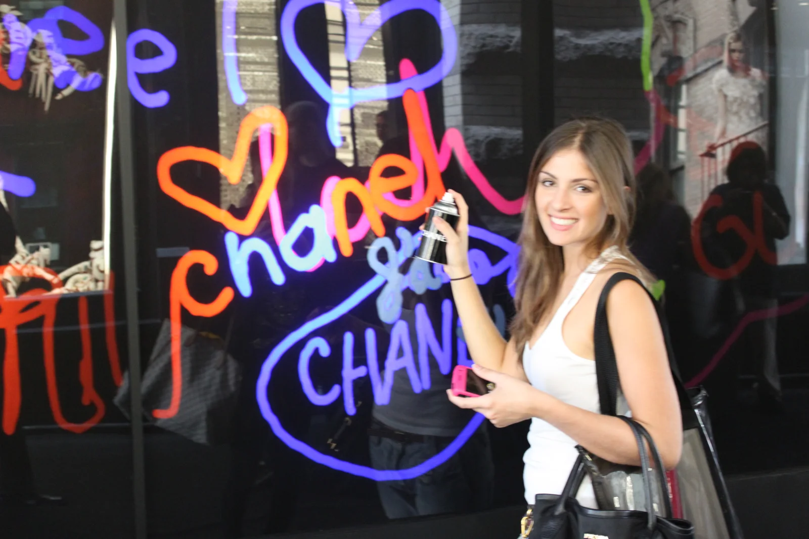
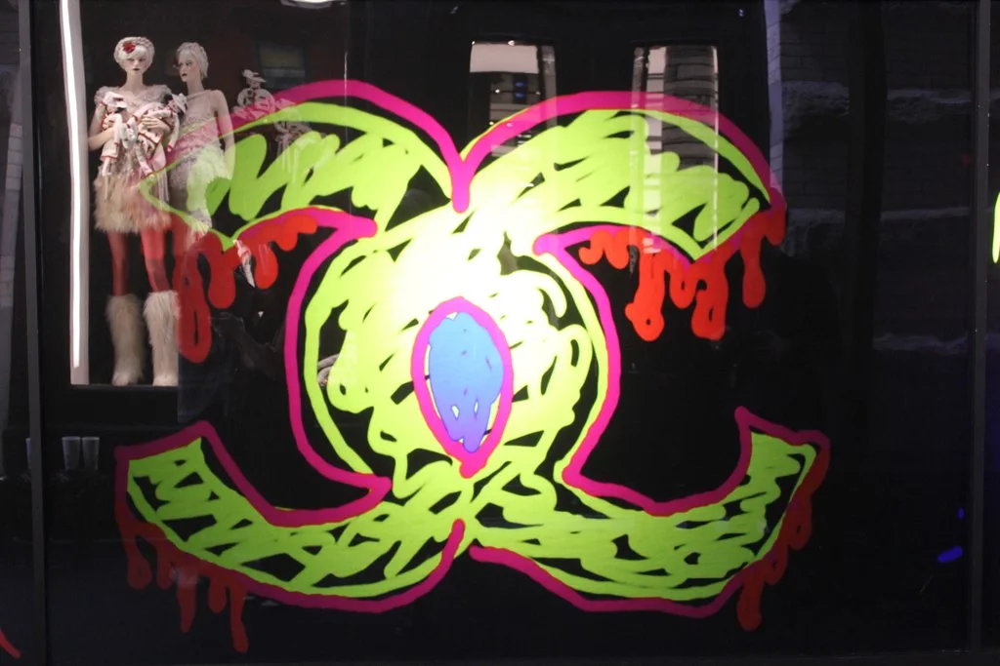
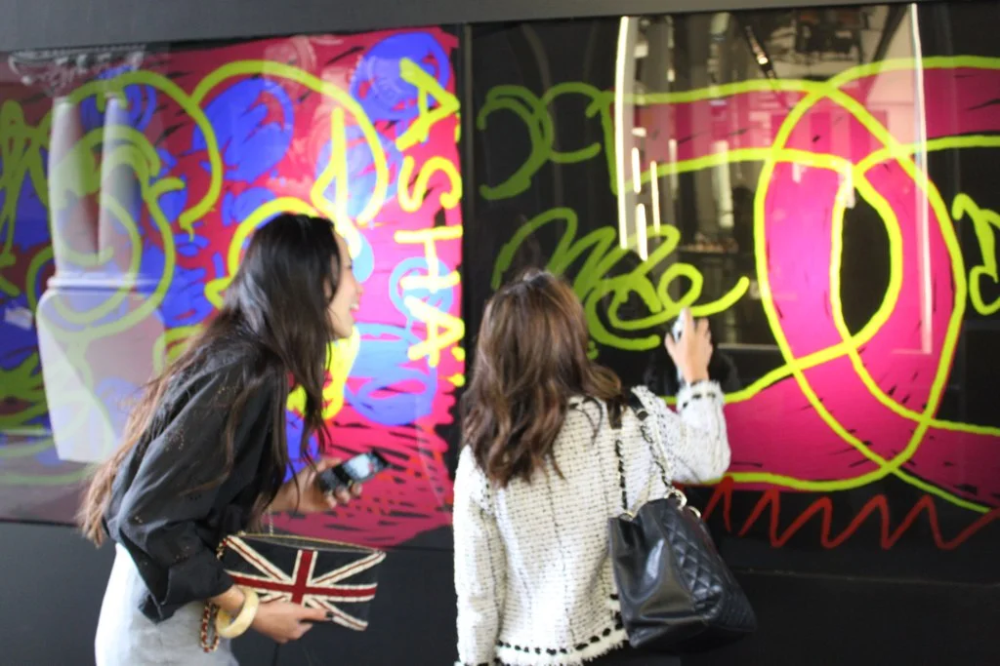
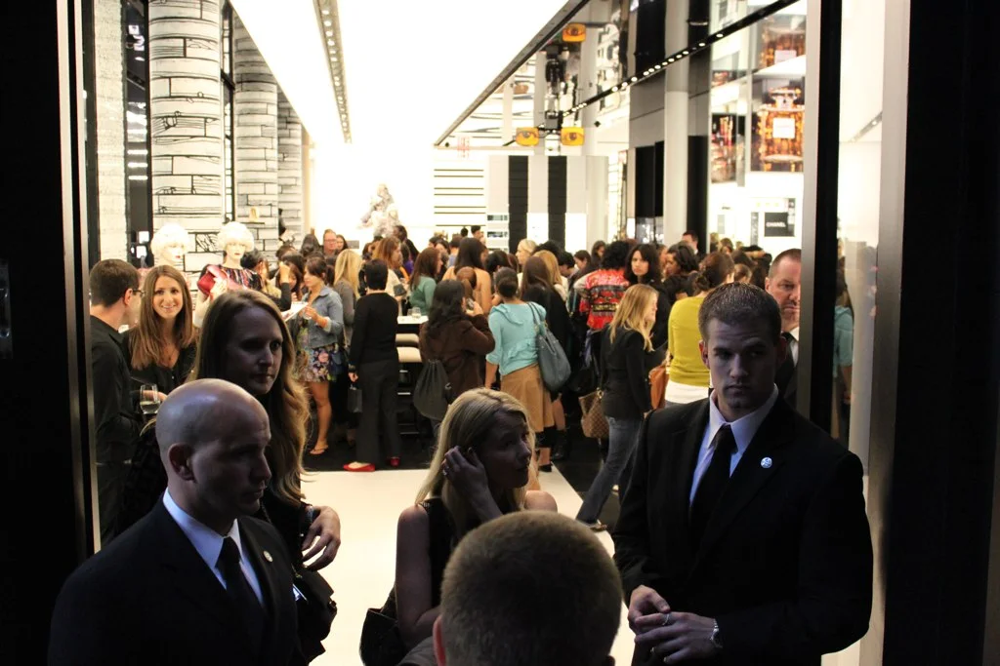
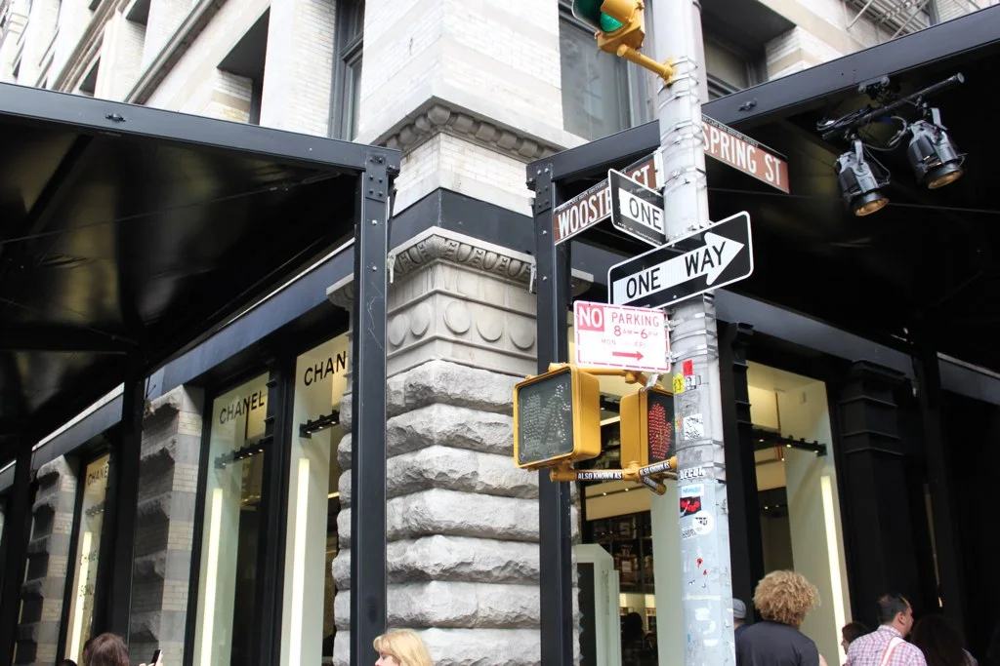
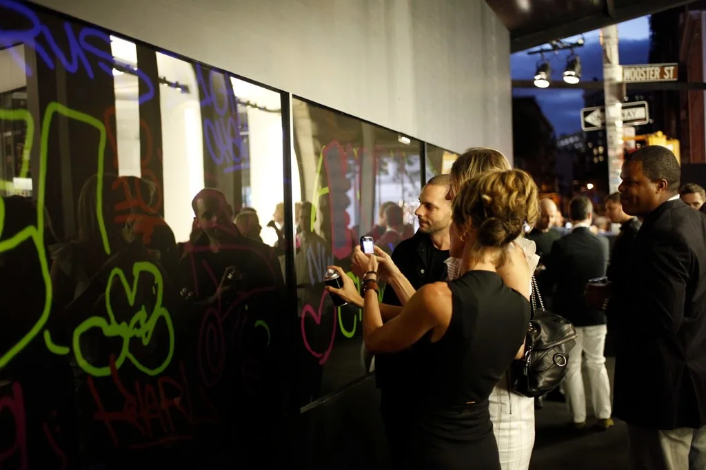
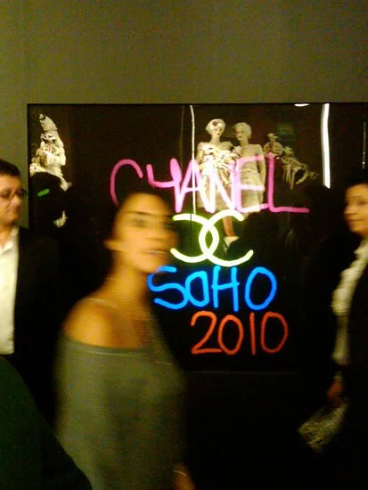
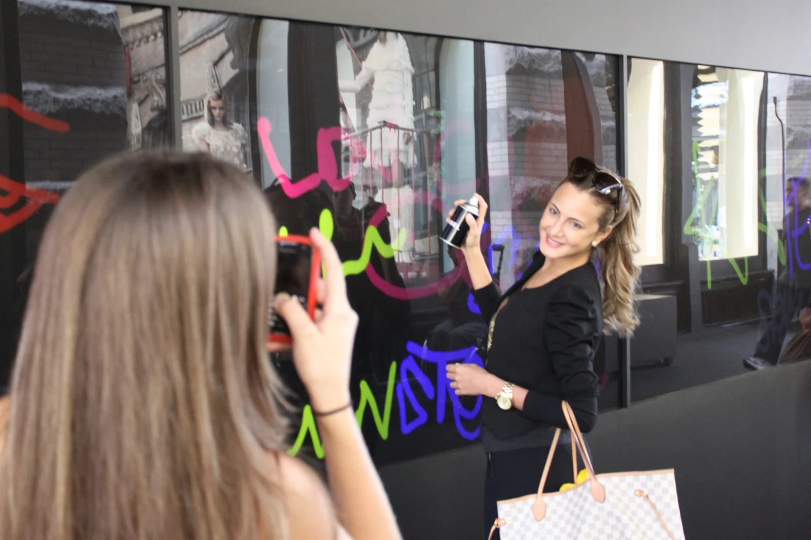

Chanel SoHo.
Fashion's Night Out, 2010.
Where this all began.
- Dates
- September 9–10, 2010
(MBFW + Fashion's Night Out) - Location
- 139 Spring Street
SoHo, New York
(4,170 sq ft) - Architect
- Peter Marino
(boutique redesign) - Setup
- Interactive LED graffiti walls
wrapping the storefront
A Chanel flagship reopening on the first day of New York Fashion Week, 500 guests, and the first wall that put Graffiti+ on the global map.
On Thursday, September 9, 2010 — the opening day of Mercedes-Benz Fashion Week — Chanel reopened its SoHo flagship at 139 Spring Street after eight months of construction. Peter Marino had redesigned the boutique end-to-end and Chanel had taken over the adjacent unit (formerly Eres) to grow the space 25% to 4,170 square feet. The reopening was a two-part affair: a 500-person cocktail party at the boutique with Karl Lagerfeld holding court, and an intimate dinner around the corner at 82 Mercer Street. Sarah Jessica Parker, Blake Lively, Diane Kruger, Claire Danes and Rachel Bilson were in the room.
Interactive LED graffiti walls wrapped the storefront, and the crowd went to work. Guests picked up Chanel-branded digital spray cans, chose colours and nozzle widths from a projected palette, and painted live pieces — "chanel," hearts, tags — straight onto the screens, all night and into Fashion's Night Out the following day. Karl Lagerfeld himself stepped up to the wall. Every piece was captured and replayed on the storefront screens the next day for the street to see. Zero paint on the boutique, full participation from a room of A-listers, and a stream of shareable images out of one of the most-watched openings of NYFW.
This was Graffiti+'s first major global brand deployment — and one of the first times a luxury house handed a spray can to its guests. Chanel went first, and the floodgates opened: in the years since, we've built digital graffiti activations for Yves Saint Laurent, Louis Vuitton, Dior, Chanel again, and a long line of fashion and beauty houses that followed. The moment a Peter Marino boutique let the crowd paint its windows, "luxury" and "graffiti" stopped being opposites.
Eighteen years. Six continents. One idea, done right.
For eighteen years, Graffiti+ has been putting real creative tools in people's hands — in public, at scale, and always with cultural integrity. The story started here.
Born from the roots of graffiti culture and built for anyone willing to pick up a custom spray can, the platform transforms boutique storefronts and brand spaces into shared canvases where guests paint together in real time. From their home in Vancouver to projects across six continents, Graffiti+ has partnered with Chanel, Louis Vuitton, Miss Dior, Nike, Jordan Brand, Hennessy and Samsung to bring authentic, participatory experiences to audiences everywhere.
A Karl Lagerfeld party, a Peter Marino boutique, a wall the city could paint. All these years on, the loop hasn't changed.






